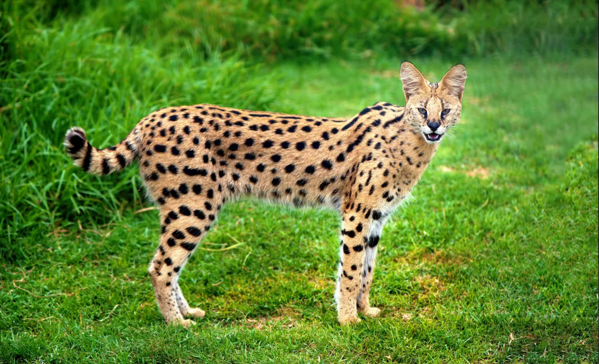
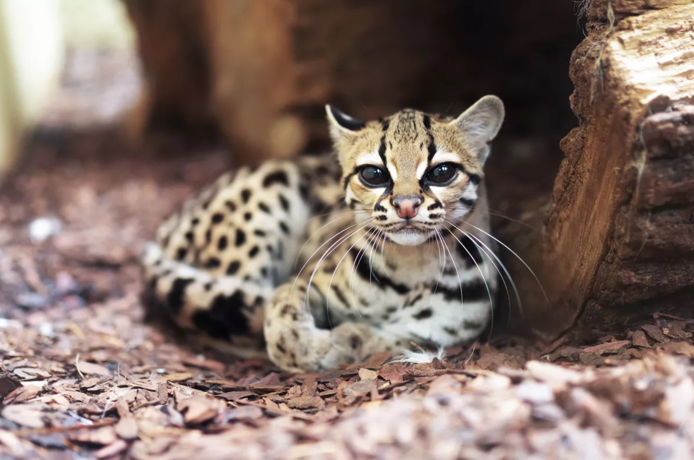
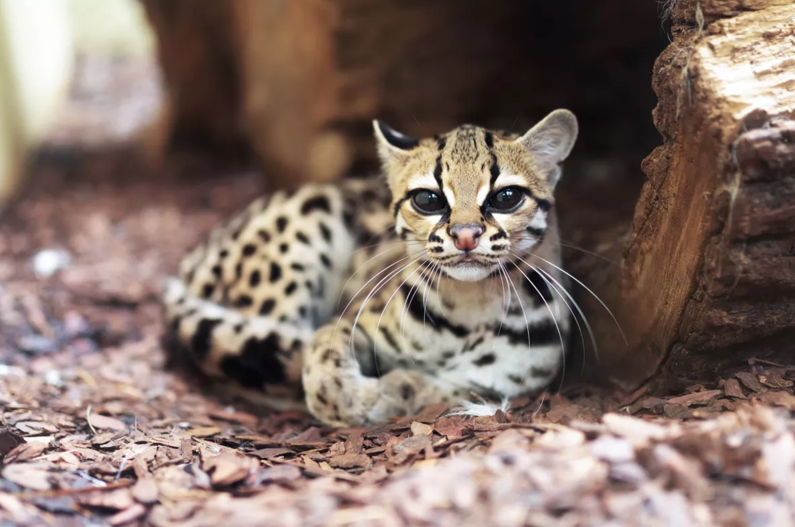

Le serval

-
Taille et poids :
mâles et femelles pèsent en moyenne de 12 kg à 26 kg et mesurent en moyenne 1.30 m de long. -
Particularités physiques :
ce chat est haut sur pattes avec de grandes oreilles arrondies. -
Poils :
le poil du Serval est court et ressemble à celui du guépard. -
Caractère :
le Serval est un animal solitaire qui vit en couple seulement en période d'accouplement. -
Mode de vie :
ce chat sauvage vit en Afrique et se nourrit exclusivement de petits animaux, comme des rongeurs, des oiseaux, des amphibiens et des insectes.
 
